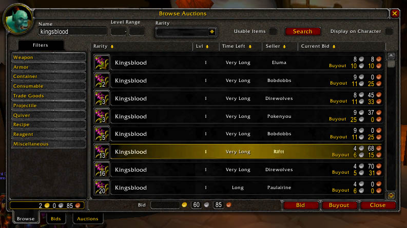

back to main
World of Data
Economic courses always bothered me in college. The models always seemed too simple, the applications too abstract and the assumptions needed to make any conclusions seemed plain silly. To name a few:
- perfect information, the assumption that everybody in the world knows everything
- rational choices, the assumption that everybody in the world is rational
- profit maximization, the assumption that every desision ever will only be made if somebody has something to gain
- market equilibrium, as a result of the previous assumptions, if there is ever a deviation the collections of all players in the market would compensate to cause a balance
- perfect competition, a perfect market equilibrium will make sure that no monopoly exists because other players would step in to remove the extra margin the monopoly player might have
Obivously these assumptions don't apply to the situation of everyday people in the real world. This is unfortunate for those who are interested in economics because this makes it very hard to practice the science. It would much better if there was some giant economic system where it might be more plausible that these assumptions apply such that we can properly test the full extend of the laws. Ideally the system would be able to give us measurements of trade activity without any noise that is generated by many participants from around the world. A sort of measurable marketplace where people trade depending on their own preferences on a wide array of varius products.
This is why, in my spare time, I have been analyzing the World of Warcraft (WoW) auction house.
Good Reasons
I may need to defend this claim a bit. There are a few reasons why I feel that WoW deserves to be taken serious if you are interested in economic research.
- The above assumptions make more sense in WoW than in the real world. Everybody is playing the same game and every action in the game is quantifiable. Everybody is playing by the same rules which are documented to the point of information overkill and the youtube videos alone should convince you that there is plenty of competition.
- The experiment consists of millions of people creating gigabytes of auction data per day, so there seems little reason to worry about statistical significance.
- WoW has an auction house on each server where players can trade items against virtual gold. Snapshots of the currect biddings can be optained through an api. This data is measure quantitatively with no possibility of human error.
- Every instance of world of warcraft has a seperate economy and there are very few differences between servers. Players cannot *just* switch from server to server and auction houses cannot trade between servers either. This means that we can compare servers with one another and safely assume that there is no influence between servers as far as the auction house is concerned.
- There is an actual system that is simulating the world in a predictable way and it is providing us with information on how it is doing it. There is no missing data or data that is measure qualitatively.
- People literally invest years playing this game. The experiment does not take place in an artificial lab and people spend their time playing this game willingly.
This might very well be the most potent experimental setup in the field of behavioral sciences ever.
Auction House Data
Through the Blizzard api I am collecting data from 246 servers across the world. On each server there are three auction houses. One for each of the opposing fractions and one that can be accessed by both. Each auction house allows the players to sell virtual goods for virtual gold to other people on the same server. Hosting an auction costs a little bit of virtual gold. The auction does not last forever and it is possible to assign a buyout price that allows for the immediate purchase of an item.

The blizzard api gives us a timestamp,
I've been parsing WoW data using the blizzard api and various other sources. I will share all the source code on github and I will spend a few blog posts commenting on my findings.